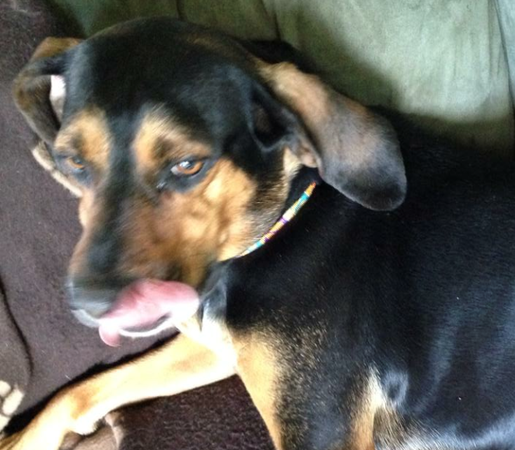

About Her
Ahsoka lived on the streets as a puppy and grew up in a harsh environment. The Pfeiffer family adopted her in 2010 when she was 1 year old. Her original name was Wendy, and we though Mandy would be a good name instead. However, the three children in the Pfeiffer family were heavily invested in the TV show Star Wars The Clone Wars at the time, and decided Ahsoka, a female padawan in the show, would be a more unique and fun name. In the TV show, Ahsoka's lightsaber is green and her cloths feature lots of purple, and for that reason Ahsoka has a purple collar and green leash.
Despite the comedic naming and dress style, Ahsoka still acts like a street dog in many aspects. She engorges as much food as she can when presented the opportunity. She jumps on counters to steal food frequently, and she also likes to run away from her family to sniff exotic smells such as poop. Despite all of this, the Pfeiffers still love her and tend to her needs. One of her best qualities is that she is very defensive of the family, and will protect it at any cost.
Her favorite activities are walking, running, sleeping, howling, cuddling, and eating. She especially loves her green treat ball, and when she rolls it around, treats fall out of it! One of Ahsoka's best friends, Bailey, is on the right. Bailey is a young, female lab. Ahsoka usually doesn't get along with other girls, but Bailey is young enough for her to be friendly.
